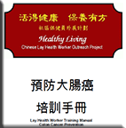
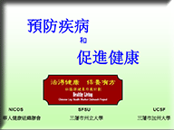
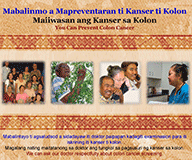
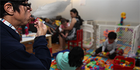
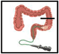

Check Out Our Most Recent Uploaded Patient Educational Materials! |
|---|
 |
| Languages: | Chart in: | Chart in: |
|
||
|
||
|
||
|
Integrative Nutritional Counseling for Type 2 Diabetes |
Biligual Traditional Chinese / English |
|
|
Vietnamese Nutrition &
|
Vietnamese/English Preventing Colorectal Cancer |
Vietnamese/English Eating Healthy & Be Active |
|
Chinese Lay Health Worker Project Promoting Colorectal Cancer Screening: Educational and Training Materials
|
 Colorectal Cancer Prevention Training Manual (English) |
Colorectal Cancer Prevention Training Manual (Chinese) |
|
| Orientation Training Manual (English) | Chinese Lay Health Worker Orientation Training Manual (Chinese) |
||
Promoting Healthy Nutrition and Physical Activity among Chinese Americans: Educational Materials
|
Chinese Lay Health Worker: Nutrition Lecture (English) |
 Chinese Lay Health Worker: Nutrition Lecture (Chinese) |
Chinese Lay Health Worker: Exercises &Tips (Chinese) |
AANCART Research
|
 Ilokano/Tagalog/Englsih Flipchart Ilokano/English Brochure Tagalog/English Brochure |
Hmong/English Flipchart Hmong/English Brochure |
Korean/English Flipchart |
 |
English Brochure: |
Chinese Brochure: |
Vietnamese Brochure: |
|
Click on  Pamphlet | ||
|
Click on above to search for different Asian materials in different languages |
||
|
Colorectal Cancer: - FIT and Guaiac Videos |
||